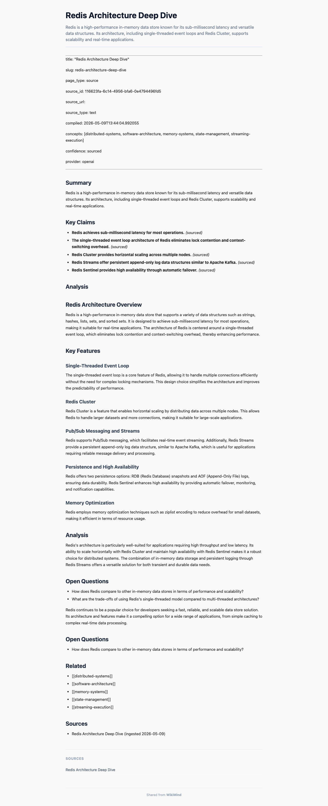

Real evidence: creating share links and accessing articles anonymously
$ curl -s -X POST http://127.0.0.1:7842/api/wiki/share-links \
-H "Authorization: Bearer $TOKEN" \
-H "Content-Type: application/json" \
-d '{"article_id":"a5e7b02e-7c6c-44b2-a15e-b6625d878254"}'
{
"id": "7a2d3ef6-7b1a-4955-b53e-ab88d5f0df11",
"article_id": "a5e7b02e-7c6c-44b2-a15e-b6625d878254",
"token": "MUPG8110jbY3T1bjDJoJd-jQKri6qNx5D1skVa9ElI4",
"created_at": "2026-05-09T17:04:02.159419",
"expires_at": null,
"revoked": false,
"view_count": 0,
"last_viewed_at": null,
"article_title": "Redis Architecture Deep Dive"
}
$ curl -s http://127.0.0.1:7842/api/wiki/share-links?article_id=a5e7b02e-7c6c-44b2-a15e-b6625d878254 \ -H "Authorization: Bearer $TOKEN" [ { "id": "7a2d3ef6-7b1a-4955-b53e-ab88d5f0df11", "article_id": "a5e7b02e-...", "token": "MUPG8110jbY3T1bjDJoJd-jQKri6qNx5D1skVa9ElI4", "created_at": "2026-05-09T17:04:02.159419", "expires_at": null, "revoked": false, "view_count": 0, "article_title": "Redis Architecture Deep Dive" }, { "id": "e203153d-...", "token": "4Ikf4GsrLGojlxGoGii-N60XLBjGdHq8O8bHnL9tEJg", "expires_at": null, "view_count": 1, "last_viewed_at": "2026-05-09T16:16:23.342746", "article_title": "Redis Architecture Deep Dive" }, { "id": "05d6a871-...", "token": "w2OGc6qWV356c6W7lhpqWWRE2bJVt4RkSoBqTW_K1Po", "expires_at": "2026-05-16T13:52:31.926713", "view_count": 1, "article_title": "Redis Architecture Deep Dive" } ... (2 more share links with 7-day expiration) ]
$ curl -s http://127.0.0.1:7842/public/articles/MUPG8110jbY3T1bjDJoJd-jQKri6qNx5D1skVa9ElI4/json # No Authorization header! { "title": "Redis Architecture Deep Dive", "content_html": "<h2>Summary</h2>\n<p>Redis is a high-performance in-memory data store known for its sub-millisecond latency and versatile data structures...</p>\n<h2>Key Claims</h2>\n<ul>\n<li><strong>Redis achieves sub-millisecond latency for most operations.</strong> <em>(sourced)</em></li>\n...", "summary": "Redis is a high-performance in-memory data store known for its sub-millisecond latency and versatile data structures...", "sources": [ { "id": "116623fa-6c14-4956-bfa6-0e4794496fd5", "source_type": "text", "title": "Redis Architecture Deep Dive", "source_url": null, "ingested_at": "2026-05-09T13:43:56.562981" } ], "created_at": "2026-05-09T13:44:04.993364", "updated_at": "2026-05-09T13:44:04.993373" }
Playwright screenshot (1280x900 viewport, fresh context with no cookies or auth) of the public article page:

The page renders title, summary, Key Claims, Analysis sections, Open Questions, Related concepts, Sources, and a "Shared from WikiMind" footer -- all without authentication.
POST /api/wiki/share-links Create share link (auth required)
GET /api/wiki/share-links List share links (auth required, ?article_id filter)
DELETE /api/wiki/share-links/{id} Revoke share link (auth required)
GET /public/articles/{token} Public HTML article (NO auth)
GET /public/articles/{token}/json Public JSON article (NO auth)
Evidence generated 2026-05-09 from a live WikiMind instance. All API responses and screenshots are real.